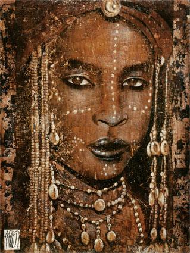

Hoàng hậu Saba (Hoàng hậu của xứ Saba) là tên lịch sử của người đàn bà đẹp, duyên dáng và đa tình của thời Tối Cổ mà trong Thánh Kinh của Thiên Chúa giáo đã có nói đến và khen ngợi (chương 1, Rois đoạn 10, Cựu Ước).
Đời nàng thật thơ mộng, nhất là cuộc tình duyên đầy say mê và cảm động của nàng, bị luật pháp Triều đình cấm ngặt, đã làm nổi bật lên bản chất thiên nhiên của người phụ nữ bất cứ ở xứ nào, ở thời đại nào, ở giai cấp nào: bản chất của TÌNH YÊU.
Nhưng trước hết, tôi muốn đưa bạn đọc trở về một đoạn lịch sử của sứ Saba để rồi bạn sẽ hiểu rõ hơn về tiểu sử của Hoàng hậu Saba.
Saba là một quốc gia Ả Rập tối cổ ở dọc bờ bể Hồng Hải, thế kỷ thứ VIII trước Công nguyên, nay là một phần đất của xứ Yemen. Lịch sử Ả Rập chép lại rằng, xứ này là quê hương của Hoàng hậu Saba, và gọi tên thật của nàng là Balkis hay là Balqtis. Trái lại, lịch sử xứ Ethiopie lại minh xác rằng chính xứ Ethiopie (Albyssinie ở Trung Phi Châu) mới đúng là quê hương của nàng, và tên thật của nàng - nhũ danh là Makeda. Hiện nay, hai nước này vẫn tranh giành vinh dự được là quê hương của Hoàng hậu Saba.
Nhưng xét kỹ về biến chuyển lịch sử thời bấy giờ thì cái thuyết của xứ Ethiopie có phần đích xác hơn.
Hay là nói: Nàng sinh ra ở Ethiopie mà làm Hoàng hậu ở Saba là đúng hơn cả.
Nhưng nàng là ai?
Trở về Kinh Cựu Ước, sau thời Đạo sĩ Moise từ biệt Ai Cập trở về Chanaan, không phải toàn thể dân Hébreux đã theo ông, một số đông không tin tưởng nơi đạo sĩ đã ở lại. Đó là những người giàu có đã gây dựng sự nghiệp khả vẻ vang ở kinh đô các Pharaon và không thích di cư về xứ Chúa. Trong đám đông người ở lại, có khá nhiều các cô gái điếm, đủ hạng gái làng chơi mà bọn thanh niên công tử, công tôn của Ai Cập rất ham chuộng. Tuy nhiên, lúc bấy giờ ở ngay trên đất Ai Cập, người Do Thái và dân Ai Cập bổn xứ đã có nhiều mối thù cố cựu. Hai bên đã tìm cách tàn sát lẫn nhau. Bỗng dưng có tin đồn khắp Thủ đô Ai Cập rằng đạo binh của Thái tử Ai Cập - con Vua Ramsès vượt qua Hồng Hải đã bị Chúa Trời của Do Thái làm nổi dậy sóng gió nhận chìm hết xuống đáy biển. Người Ai Cập được tin đó liền nổi giận, hầm hầm kéo đến các xóm của người Do Thái ở và tàn sát để trả thù cho quân đội của họ.
Người Do Thái bị giết chết rất nhiều, còn sống sót độ trăm người chạy tán loạn trong đêm tối để tìm nơi trốn thoát. Nhưng sáng hôm sau, họ bị khám phá, bị bắt hết và bị "Tòa án dân chúng" của Ai Cập kết tội xô xuống Hồng Hải, lúc bấy giờ gọi là Biển Máu - Huyết Hải. Chúa của Do Thái (tức là Chúa Trời trong Thánh Kinh gọi là l'Eternel) liền nổi trận cuồng phong thổi tất cả dân Ai Cập vào sa mạc để cứu bọn Do Thái. Nhờ vậy đám tàn dân Do Thái này kéo nhau đến định cư ở một nơi có gò núi cao và phì nhiêu, cây cỏ tươi tốt ở tận trung tâm Phi Châu còn hoang vu chưa có người khai khẩn. Ba ngàn năm trăm năm sau, đám dân Do Thái phiêu lưu này trở thành một dân tộc giàu mạnh nhờ các nghề trồng tỉa, chăn nuôi và nghề làm vàng bạc. Họ thành lập một xứ, đặt Thủ đô là Axoum, tức là xứ Ethiopie ngày nay.
Một chú thợ bạc giàu nhất tên là ANGUEBO được dân chúng tôn lên làm Vua.
* CÔNG CHÚA MAKEDE KHÔNG ĐƯỢC LẤY CHỒNG
Vua ANGUEBO và vợ là RACHEL đến tuổi già mà không có con trai để nối nghiệp Quốc vương. Ông chỉ có một mụn con gái tên là MAMMÉTÉ, cô con gái độc nhất để truyền ngôi báu, có vương miện 7 viên ngọc thạch của Vương quốc Axoum.
Các ông cố đạo Do Thái có uy tín lớn với dân chúng được quyền định đoạt luật pháp trong nước, chấp nhận Công chúa Mammété được lên ngôi Hoàng hậu sau khi Vua chết. Nhưng nàng phải tuân theo một điều kiện, là suốt đời phải giữ trinh tiết, không được lấy chồng, và cũng không được yêu một người đàn ông nào.
Hội đồng cố đạo phán rằng: ngồi trên ngai báu của xứ Axoum phải là một Công chúa hoàn toàn trong sạch.
Mặc dầu Vua Anguebo phản đối và tìm cách vận động cho con gái độc nhất của ông khỏi bị luật pháp giã man kia ràng buộc, Hội đồng cố đạo vẫn cương quyết giữ lập trường và Công chúa Mammété bị bắt buộc chấp nhận điều kiện vô nhân đạo. Từ đó Công chúa Mammété được đổi tên thành MAKEDA, theo tiếng Ethiopien có nghĩa là Công chúa TRINH TIẾT.
Hôm Vua cha băng hà, Công chúa MAKEDA vừa tròn 20 tuổi. Bốn chục ngày sau, nàng được tôn lên ngôi Hoàng hậu Vương quốc Axoum, và trước Hội đồng cố đạo cùng toàn thể dân chúng Thủ đô, nàng khẳng khái làm lễ tuyên thệ.
"Giữ trọn trinh tiết, không yêu người đàn ông"
* SUỐT ĐÊM EM KHÓC VÌ NHỚ THƯƠNG ANH
Nhưng Hoàng tử đẹp trai hiện ra trước mắt Công chúa ngay lúc nàng vừa thốt ra lời tuyên thệ...
Trong đám các Vua chúa và quan khách ngoại giao của các xứ sở Ả Rập, Do Thái, Hy Lạp, Ai Cập, Ba Tư đến dự lễ đăng quang của Hoàng hậu, có Hoàng tử Assadaron, cháu đích tôn của Hoàng đế xứ Babylon.
Trong nghi lễ oai nghiêm tráng lệ, ngay giây phút đầu tiên hai tia mắt của nàng và của chàng vô tình chạm vào nhau, tiếng sét đã nổ trong tim chàng và nàng.
Và đêm ấy, khi những ngọn đuốc mỡ cá sấu đã tàn, khi tiếng nhạc du dương của đoàn cung nữ đã im lặng, trong khung cảnh lờ mờ thơ mộng của vườn Ngự uyển ngào ngạt hoa thơm, Hoàng hậu Makeda trẻ đẹp đã ngã gục vào đôi cánh tay say sưa âu yếm của Hoàng tử xứ Babylon.
Nhưng trong ngây ngất của tình yêu ban đầu và tình yêu tuyệt vọng, nàng vẫn giữ "trong trắng như viên ngọc trong lòng biển đại dương"
Hoàng tử Assadaron xin ở lại Axoum không về xứ. Cuộc giao thiệp lén lút giữa chàng và Hoàng hậu TRINH TIẾT mỗi ngày mỗi thân mật thêm, mặc dầu nàng biết rằng những đôi mắt cú vọ của Hội đồng cố đạo vẫn không ngớt dòm ngó nàng, theo dõi nàng trong ánh sáng và trong bóng tối. Nhất là ông Hoàng Amram, người của Hoàng tộc được đề cử làm cố vấn cho Hoàng hậu còn trẻ tuổi, lúc nào cũng nhìn nàng với đôi mắt soi mói, lạnh lùng, nghiêm khắc.
Nàng có nuôi hai con két đỏ, một trống một mái mà nàng tập luyện làm trung gian cho những cuộc gặp gỡ bí mật giữa nàng và chàng. Lúc bấy giờ người Ethiopien cũng như người Ai Cập chưa có văn tự, cho nên chưa biết viết thư, mặc dầu họ văn minh không kém Hy Lạp và Ba Tư.
Hoàng hậu dạy hai con két nói: "Na na Fikrit Aron", nghĩa là "Đến đây, đến đây tình nhân Aron". Aron tức là chữ đầu và chữ cuối trong tên của Hoàng tử Assadaron.
Mỗi lần trông thấy người yêu đi lang thang ngoài thành, Hoàng hậu thả hai con két đỏ ra, chúng bay đậu trên các cành cây và đua nhau kêu: "Na na Fikrit Aron" "Na na Fikrit Aron". Thế là Hoàng tử Assadaron hiểu ý, đêm đến lẻn vào vườn thượng uyển để gặp người yêu.
Hoàng hậu Makeda và "Aron" yêu nhau mỗi ngày mỗi thắm thiết say mê. Đã bao nhiêu lần nàng âu yếm và đau khổ gục đầu khóc thúc thít trong lòng tình nhân. Chàng ôm xiết nàng trong đôi cánh tay yêu đương khỏe mạnh, mơn trớn nàng, hôn nàng trên mái tóc, trên đôi mắt, làn môi với hai ngấn lệ âm thầm của tuyệt vọng.
Nhưng mặc dầu có những lúc men yêu đương làm cháy thịt cháy da, chàng van lơn đòi hỏi, Hoàng hậu Makeda trẻ đẹp, sầu mộng, đa tình vẫn cố nén giữ được trong trắng, không dám để phạm đến trinh tiết mà nàng đã tuyên thệ bảo toàn trước Chúa và thần dân.
Một buổi sáng, hai cung nữ da đen thân tín nhất của Hoàng hậu rón rén bước vào phòng nàng, trong bàn tay mỗi người có một vật gì đỏ tươi giống như con két, nhưng không cử động. Hai cung nữ vừa tiến đến gần nàng, vừa khóc.
Makeda ngó kỹ thì ra hai con két của nàng đã bị bàn tay bí mật nào cắt cổ chết, hai vết thương còn rỉ máu.
Nàng biết đó là một cảnh cáo nghiêm trọng, một điềm dữ cho tính mệnh của nàng và của người yêu. Nàng suy nghĩ suốt đêm, thấy cần phải báo tin gấp cho Hoàng tử Assadaron biết để chàng liệu xanh lánh khỏi nơi nguy hiểm này. Nàng trao cho cung nữ da đen mang đến cho chàng một bức vẽ do tự tay nàng vẽ ra. Nàng tin rằng Hoàng từ Assadaron sẽ đoán hiểu được ý nghĩa của bức tranh bí hiểm.
Hiện nay ở Ethiopie, bức vẽ này vẫn còn được lưu truyền trong dân chúng với bản dịch nghĩa sau đây:
" Aron anh ơi! Những bàn tay bí mật và tàn ác đã bóp chết hai con két - sứ giả tình yêu của chúng ta.
"Cho nên em buồn, em khóc... suốt đêm vì nhớ thương anh, mắt em để tuôn rơi hai dòng thảm lệ.
"Thôi chúng ta hãy gạch một đường đen để tan cho tình yêu từ nay.
"Từ nay Makeda đau khổ và cô đơn, luôn luôn mắt tràn ngập lệ, tiếp tục nhiệm vụ lịch sử như kẻ nô lệ phải kéo cày trên mảnh đất gồ ghề đầy sỏi đá.
"Vĩnh biệt anh, Aron ơi! Anh nên xa lánh chốn này. Giữa anh và em từ nay sẽ có một bức màn ngăn cách... Hãy quên em đi!"

Không được gần người yêu, vị Hoàng hậu trẻ đẹp, rất lãng mạn và hãy còn trinh tiếc nguyên vẹn muốn trả thù bọn đàn ông bằng một chính sách "trọng nữ khinh nam" vô cùng táo bạo, lận đầu tiên trong lịch sử các nước Cận Đông.
Nàng đặt ra luật lệ mới, ban cho phái nữ rất nhiều quyền hành trong gia đình cũng như ngoài xã hội. Chính sách nữ quyền của nàng cực đoan đến đỗi dưới chế độ cai trị của nàng, người phụ nữ được quyền bỏ tiền bạc ra mua đàn ông như người ta mua những kẻ nô lệ để sai khiến vậy. Người con gái nào cũng có thể mua người đàn ông vừa ý mình về để làm chồng, và người vợ là chủ gia đình. Nàng động viên bọn đàn ông con trai khỏe mạnh trong nước để thành lập một đội quân trên ba trăm ngàn người do nàng chỉ huy. Nàng truyền lệnh đóng rất nhiều tàu thủy, thiết lập một đội hải quân hùng mạnh nhất thời bấy giờ, gọi là đoàn "Chiến Thuyền Xanh", đặt dưới quyền điều khiển của Hoàng hậu.
Chuẩn bị đầy đủ binh sĩ và khí giới, nàng kép quân đi chinh phục các nước lân cận, và nàng đánh đâu thắng đó. Lãnh thổ Ethiopie của nàng được mở rộng ra tận biên giới Ai Cập, bao gồm các vùng rộng lớn: Kenya, Ouganda và Soudan. Xứ Ethiopie của Hoàng hậu Makeda bao gồm cả Đông Bắc Phi Châu. Nàng kéo quân đội của nàng đến tận bờ biển Hồng Hải và muốn vượt bể sang đánh các xứ Ả Rập để chinh phục Á Châu.
Nói là làm. Nàng quyết thực hiện ý chí ấy trong cơn hăng say binh lửa để quên mối tình tuyệt vọng.
Nàng, một cô gái 21 tuổi, Hoàng hậu kiều diễm của một quốc gia mới sáng lập, vì luật pháp triều đình của bọn đạo sĩ già khắc khe cấm nàng không được yêu vị Hoàng tử đẹp trai Assadaron của nàng, nên nàng quyết cho con tim đau khổ hận thù của nàng say sưa trong máu lửa chiến tranh, trong cảnh giết chóc hàng vạn binh sĩ đàn ông mà nàng kiêu hãnh giẫm lên xác chết dưới đôi bàn chân ngà ngọc, oanh liệt. Nàng hăng hái truyền lệnh đoàn quân viễn chinh xuống thuyền vượt Hồng Hải đổ bộ lên vùng Ả Rập.
Sau ba năm chiến đấu khủng khiếp, Hoàng hậu Makeda trẻ đẹp chiếm được xứ Yémen, một thiên đường thơm mát của xứ Ả Rập huyền linh ảo địa.
Lãnh thổ của nàng bây giờ đã trở thành "Nhị Châu Đế Quốc", quê hương ở bên Phi Châu, tân cương thổ ở Á Châu Cận Đông, ở giữa là Hồng Hải. Nàng kéo quân vào đóng tại Thủ đô Saba của Yémen và đặt Saba làm Đông Đô của Tân Đế Quốc trong lúc Axoum là Tây Đô ở đất nhà.
Lịch sử Ả Rập còn để lại những bức tả cảnh vô cùng linh động của Kinh đô Saba huyền bí. Nơi đây, Hoàng hậu Makeda được suy tôn là Hoàng hậu Saba. Nàng gọi các kiến trúc sư danh tiếng đến phán rằng:
"Ta muốn một thành phô mỹ lệ được xây dựng nơi đây.
"Ta muốn ở Trung tâm Thành phố được cất lên ba vòng lâu đài hình bán nguyệt.
"Ta muốn ở ngay giữa những bán nguyệt ấy được dựng lên một lâu đài thứ tư cao vút lên mây để làm cung điện của ta.
"Sau cùng ta muốn rằng, trên thượng tầng cung điện của ta có một sân rộng, đổ đầy đất trồng cây, toàn những cây quý có hoa thơm và đẹp, thành vườn Thượng Uyển để cho các người tứ xứ đi tàu trên bể Hồng Hải từ xa ngước mắt lên đều thấy vườn cây cảnh của ta như treo lơ lững trên trời xanh."
Các kiến trúc sư cúi đầu vâng lệnh, ngày đêm lo xây cất và một năm sau tôn ý của Hoàng hậu Saba được thực hiện đúng theo điều mơ ước của Nàng.
Nhưng... Hoàng hậu Saba vẫn cứ buồn rầu chán nản giữa cung điện nguy nga, lâu đài tráng lệ ấy. Nàng bước đi một mình trong thực tế lộng lẫy của vinh quang, phú quý, đầy mùi thơm ngào ngạt của trăm nghìn cánh hoa. Đầy những kho vàng ngọc, châu báu mà nàng thò tay vào hốt có thể vứt từng nắm qua cửa sổ cũng không bao giờ hết được.
Y phục rực rỡ, chói sáng kim cương ngọc bích, trân châu đầy cổ, đầy tay, Hoàng hậu Saba đứng trên góc vườn Thượng Uyển, trên chín từng mây ngó xuống thành phố lui nhui, lúc nhúc những người qua lại... Bỗng nàng thấy trong xóm nhà lao động rách nát dưới một bóng cây dừa, một đôi trai gái nghèo nàn âu yếm hôn nhau.
Hoàng hậu Saba gục đầu vào chậu hoa quý, thổn thức một mình. Nàng lẩm bẩm:
"Cặp tình nhân kia giàu hơn Ta!"
Hoàng hậu Saba chạy nhanh vào cung điện, nàng đóng kín cửa không cho các nô tì vào hầu hạ. Ngã gục xuống chiếc long sàng bằng gỗ hương trầm, châu ngọc, kim cương, nàng ôm chiếc gối thơm ngát nước hoa và khóc nức nở.
Nàng cảm thấy cả cung điện rỗng không, chẳng có gì. Làm chủ bao nhiêu đất đai, thành trì, dân chúng; thâu về bao nhiêu kho vàng, kho ngọc nàng thấy con tim nàng vẫn trống trải, hoang liêu, vắng lặng như sa mạc Ả Rập.
Tiếng đờn, tiếng sáo réo rắt du dương từ phòng ca nhạc vang lên không làm cho tâm hồn nàng rạo rực, êm đềm nữa. Nàng truyền lệnh:
- Im đi!
Nàng đứng dậy, bước đi trong hành lang rộng mênh mông. Bóng nàng đơn độc, in lờ mờ trên các bức tường cẩm thạch thơm ngát nước hoa. Nàng gọi một nữ tỳ:
- Fedena!
Một cung nữ rất đẹp, độ 19 tuổi từ trong một căn phòng thoăn thoắt chạy ra quỳ xuống bên chân Hoàng hậu. Nàng bảo:
- Gọi cho ta một viên chiêm tinh nổi tiếng nhất.
Fadena đứng dậy cung kính nghiêng mình chào rồi biến đi. Một lát sau, chiêm tinh gia đến. Đó là một ông già râu trắng phau, đôi mắt sáng rực.
Ông ngồi trên sàn hoa bên chân Hoàng hậu. Nàng phán:
- Nhà ngươi xem tương lai của Trẫm như thế nào?
Ông lão chiêm tinh tươi cười lễ phép đáp:
- Hoàng Hậu đang băn khoăn về một vấn đề tâm sự, nhưng vấn đề sẽ được giải quyết một ngày gần đây. Thần xem các ngôi sao từ mấy đêm nay thấy triệu chứng Hoàng hậu sắp chinh phục được trái tim của một Quốc Vương tài ba trí tuệ bậc nhất trên hoàn cầu.
Hoàng Hậu mĩm cười hỏi:
- Quốc Vương ở nơi nào thế?
- Ngài ở Hướng Bắc.
Hoàng hậu khoát bàn tay mũm mĩm dịu dàng ra lệnh cho chiêm tinh gia rút lui. Nàng đứng dậy lên vườn Thượng Uyển, ngồi bên bờ một hồ nước soi mình vào ánh nước long lanh. Nàng còn trẻ lắm. Quả thật nàng diễm lệ và duyên dáng vô cùng.
Bỗng Fedena rón rén đến, quỳ xuống tâu:
- Tâu Hoàng hậu, có một người buôn tên là Tamrinn, từ Jérusalem mới đến, xin vào yết kiến Hoàng hậu.
- Có chuyện chi?
- Thưa Hoàng hậu, y có đem những trái sung ngon nhất ở Ả Rập và một hộp kim cương đến dâng Hoàng hậu để tỏ lòng tôn kính.
- Cho y vào.
Tamrinn ngồi trên sàn hoa, được Hoàng hậu ân cần hỏi han:
- Trẫm nghe danh tiếng lừng lẫy của Quốc vương Salomon ở Jérusalem. Những tiếng đồn về Ngài có đúng sự thật không?
- Muôn tâu Hoàng hậu kiều diễm, uy nghi của xứ Saba, quả thật lời đồn đãi về Đại Vương Salomon không quá đáng chút nào. Danh thơm của Ngài không những thấm nhuần trong óc của bọn thường dân chúng tôi, của toàn xứ Israel mà còn bay khắp miền Palestine, khắp các xứ Ả Rập cho đến các nước ở hai bên bờ Địa Trung Hải đều nghe danh Salomon, đều sùng kính Salomon - con trai kế vị của David Vĩ đại. Tiếp tục sự nghiệp vô cùng cao cả của David và xây dựng đền Jérusalem thiêng liêng huyền bí làm nơi trung tâm thờ Chúa của loài người. Công đức của Salomon vô lượng vô biên. Trí óc của Salomon khôn ngoan sáng suốt vô cùng, không vị Vua nào sánh kịp. Toàn thể Israel, toàn dân Do Thái chúng tôi đều nhờ ơn huệ của Đại Vương Salomon, con trai kế vị của David Vĩ đại.
Hoàng hậu Saba mĩm cười khẽ bảo:
- Cảm ơn.
Rồi nàng truyền lệnh cho Tamrinn lui ra. Người lái buôn ở kinh đô của Hoàng hậu Saba 7 ngày. Trước khi y từ biệt Saba trở về Jérusalem, y được Hoàng hậu triệu vào cung. Nàng gởi rất nhiều quý vật để dâng tặng Đại vương Salomon, trong số đó có một con sư tử nhỏ bằng ngọc thạch. Nàng dặn người lái buôn:
- Con sư tử này là một cái hộp đựng hai miếng ngà, trên mặt ngà có khắc nhiều bức vẽ. Nếu quả thật trí óc của Đại vương Salomon khôn ngoan và sáng suốt đúng y như lời mà ngươi đã tán dương với Ta thì Ngài sẽ đoán hiểu ý nghĩa của những bức vẽ ấy. Ta mong sẽ được Ngài gởi cho Ta xem ý nghĩa ấy như thế nào. Nhưng trước hết, Ngài phải tìm cho ra phương pháp mở con sư tử này mà không đập vỡ nó.
Tamrinn tuân lệnh đem con sư tử bí mật này về Jérusalem.
Hoàng hậu Saba kiên nhẫn chờ câu trả lời.
Một thời gian sau, không quá một tháng, Salomon phái đến Hoàng hậu một viên quan coi kho của Vua với một đoàn tùy tùng rất đông đảo. Salomon gởi đến nàng 24 thùng đựng đầy các thứ bửu vật: tơ lụa, các loại thuốc trường xuân, các loại nước hoa và vàng bạc, trân châu, kim cương, bích ngọc. Sau cùng, một món quý nhất và lạ nhất là một cái hộp bằng gỗ hương trầm chạm đúng kiểu mẫu đền Jérusalem. Nhưng đây chỉ là cái nắp hộp. Mở nắp ra, Hoàng hậu ngạc nhiên khi thấy con sư tử bằng bích ngọc của nàng được gửi trả về.
Đại Vương không tìm được bí pháp mở con sư tử ư? Nhưng nàng bấm một cái nút nhỏ ở dưới bụng con sư tử thì con sư tử mở ra. Trong bụng con sư tử, nơi nàng đã đặt hai miếng ngà, bây giờ nàng thấy một cuộn giấy bằng lá cây papyrus, trên đó có ghi những lời của Vua giảng giải những bức vẽ của Hoàng hậu như sau đây:
"Hoàng hậu Saba đội vương miện có 7 viên ngọc
"Rực rỡ như con công
"Trong trắng như trân châu còn nguyên trinh trong lòng đại dương
"Hoàng Hậu của Nhị Châu Đế Quốc có biển phân cách và nối liền ở giữa
"Vàng bạc châu báu tràn ngập như một dòng kim ngân chảy hoài không cạn
"Nhưng Hoàng Hậu buồn khóc dưới bóng cây trắc bá cô đơn
"Đêm, ngày trái tim của Hoàng Hậu bị đè nặng dưới một khối u sầu
"Nhưng, một đêm, các vì sao trên trời chỉ cho Hoàng Hậu biết Jérusalem rực rỡ tưng bừng dưới triều Vua Salomon
"Công lý và danh thơm của Ngài bay khắp hoàn cầu
"Giờ đây Hoàng Hậu Saba muốn được gặp Vua Salomon ở Jérusalem..."
Vị Hoàng hậu trẻ đẹp, lãng mạn và trinh nguyên của Saba hồi hộp sung sướng vì tiếng nói thầm kín của con tim nàng, tượng trưng bằng những nét vẽ bí hiểm như thế, chỉ có một người là Salomon đọc được, hiểu được mà thôi. Không như người yêu đầu tiên trước kia, Hoàng tử Assadaron tuy đẹp và trẻ, nhưng nàng gởi cho chàng những bức vẽ tỏ tình đau đớn mà chàng không biết trả lời. Và chàng ra đi, không hề tỏ chút tình quyến luyến nhớ thương.
Salomon dù lớn tuổi hơn nhiều, nhưng trong vũ trụ này còn ai thấu hiểu rõ lòng nàng bằng Đại vương? Salomon là người đàn ông độc nhất thông minh và khôn ngoan tuyệt vời, xứng đáng với tình yêu băng trinh mà giờ đây Nàng sẵn sàng dâng trọn vẹn cho Người.
Thế rồi Hoàng hậu Saba khởi hành qua Jérusalem để gặp mặt Vua Salomon - người kế vị oai nghi của David, người thông minh nhất trên hoàn cầu, người đang hồi hộp chờ đón Nàng trong đôi tay âu yếm.
Dù chỉ được làm vợ Salomon một đêm thôi, trong cuộc thăm viếng kỳ thú này cũng đủ là diễm phúc tuyệt vời cho cả cuộc đời Nàng.
Kết quả cuộc tình duyên diễm tuyệt ấy là khi trở về kinh đô Saba, Nàng đã có thai. Đứa con duy nhất của Salomon cho Nàng tên là Ménélik, sẽ kế vị Nàng trên ngôi Hoàng đế xứ Ethiopie.
Đó là bậc thủy tổ của Triều đại Négus của Đế quốc Ethiopie, hiện nay đang phát triển văn minh ở trung tâm Phi Châu. Một triều đại vẻ vang oanh liệt, liên tục hơn 3.000 năm lịch sử, khai nguyên do một mối tình vô cùng cảm động của một nàng Juliette Đông Phương.